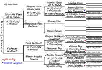
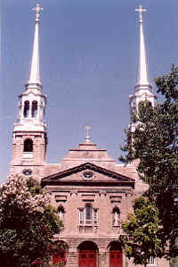
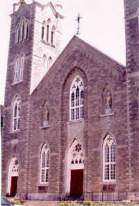
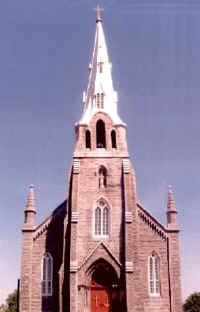
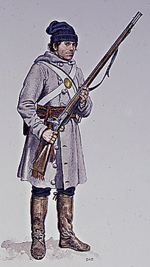
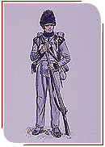
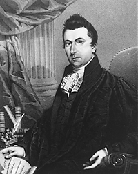

|
The last generation at
Sault-au-Récollet
Jacques was born on April 2,
1781, at
Sault-au-Récollet, like his father Jean-Baptiste and his grandfather
Joseph. His great-grandfather Pierre
had left the Québec City area to settle there at the beginning
of the century. (N.B. he was baptized under the name
Louis, but the records found to date strongly
suggest that this is indeed Jacques, our ancestor.)
On February 26, 1810, in Saint-Laurent de Montréal, Jacques married
Marie-Amable-Marguerite Varin dite la Pistole. She was the daughter of
Louis, a cooper, and Catherine Guilbault. The groom's witnesses
were his brothers Jean-Baptiste and Louis Chauret. Jacques and Marie
had signed a marriage contract on February 19 before notaire (notary)
Barron.

Lineage of
Marie-Amable-Marguerite Varin dite la Pistole
It includes four filles du Roy (King's Daughters) and a soldier of the
Carignan regiment.
We also meet some Roys, who are related to another
of our lineages, the Pageaus.
(You can print this document in
landscape mode.)
Jacques chose to live somewhere other than the Sault. He
moved several times, but always on the island of Montréal.
We can say this from the parishes named in his children's
birth extracts. None of his children seems
to have gone back to live in Sault-au-Récollet.
Jacques died in Montréal on August 5, 1869.
His burial record says he was a
day labourer, widower of Marie Varin, living in Notre-Dame
parish and aged 98 1/2 (he was really closer to
88 1/2. The priest got his arithmetic wrong, or was
misinformed. It is common, in official records, to
find approximate or incorrect ages). Jacques had a
long life and witnessed great political
upheavals, including the Patriotes' Rebellion and
Confederation... as well as incredible technical progress.
To
learn the history of Sault-au-Récollet and the places
still worth visiting
|

The eldest son, Louis, was born in Sainte-Geneviève de Pierrefonds
in 1811 and married there in 1841.
The parish dates from 1741.
|

The next five children, including our ancestor Jacques Jr.,
were born in Saint-Laurent parish,
Montréal.
The parish dates from 1720.
|

Benjamin was born in 1824 in Saint-Joachim de Pointe
Claire. We don't know where the last two
children were born.
|
All his life, Jacques lived
through feverish times
Jacques's life was surely devoted to his work and his
family. But he no doubt took part in, or witnessed, the political,
cultural and social life of his time. People learned
parliamentary government through many elections, each more
turbulent than the last. Pastoral letters from the higher clergy preached obedience to the
King of England. The members of the Assembly swore allegiance to him. But
among the people there were many points of view: some hoped
France would return to Canada and worked secretly toward that end.
Others, just as secretly, through pamphlets or meetings,
campaigned for Lower Canada to join the United States. Spies
for every political idea abounded. Secret letters and
reports were presented, on one side or the other, to
the Directory, or Napoleon, or the English court. Anyone who
got caught faced prison for treason, the pillory and, in some
cases, hanging.
 Jacques's era was marked by
a series
of clashes between the two groups, French and English Canadians.
Whether in the mostly French-speaking Parliament of Lower Canada, or
in each party's newspapers, where verbal violence was often
found, neither group would let go. All of this against a
background of threats of invasion, riots, assimilation or war,
and for years on end.
Faced
with threats of every kind, the militia again became compulsory military service
for all men between 16 and 60. Militia
officers were responsible for training the militiamen a few
days a year. In case of conflict, the militiamen helped the regular army
drive back the enemy.
So Jacques was, very probably, a militiaman. What
were his political views? As today, most
people probably wanted nothing more than a quiet life for their family. Putting bread on the table was not
easy in those days,
because harvests were often poor. Not to mention the epidemics
of picote (smallpox) and scarlet fever (1783), smallpox (1784), cholera
(1832-1854) and typhus (1847), which claimed thousands of victims.
A truce: the War of 1812
During the War of 1812, an elite militia was created on May 28,
1812, when Governor George Prevost imposed conscription
on 2,000 militiamen chosen by lot. Four battalions were to lend
a hand to the regular army. Other major call-ups
followed, until the end of the war. Jacques was then 35
years old, newly married and father of a first son born in 1811.
At that time Napoleon ruled all of Europe except
Russia and England. To weaken England, he imposed a
blockade meant to stop every European country from trading with
England. In reply, England, which controlled most
of the world's seas, blockaded Europe, preventing every country
in the world from trading with the countries of Europe. This last measure
greatly hurt the United States, which lost many
trading partners. They declared war on England but,
with a navy too small to take on the English
navy directly, they quickly targeted Canada, a British
colony. For these Americans had another goal:
making their expansionist dream come true,
which also meant bringing Canada into the American Union, as they had already
tried during the war of 1776. Economic stakes,
but territorial ones too.
The Americans coveted the western lands, Indigenous
territories. Native resistance to American expansion
fit right into this border war, fought from
the Atlantic to the Pacific to preserve heritage and traditions.
Meanwhile, American public opinion fed and spread the idea
that Great Britain was backing the Native peoples.
 Faced with
this threat of invasion, a real one this time, the Canadians,
English and French, joined forces and defended their territory all
along their border with the Americans, in
Upper Canada (Ontario) as much as in Lower Canada (Québec). In Lower Canada, the decisive battle took
place at Châteauguay, where Michel De Salaberry bravely drove back
the Americans with the help of the army's French-Canadian
Voltigeurs. Other important battles took place in Upper Canada; the American army was routed and peace was
signed in 1814, with neither side having gained
anything more.
|
Note that three days after
the famous Battle of Châteauguay, on October 29, 1813, our ancestor of the 7th
generation, Jacques Jr., was born in Saint-Laurent de Montréal.
 |
The friction resumes  After
the war, which had damaged the country's economy, the friction between
French and English Canadians resumed with a vengeance. In 1814,
Louis-Joseph Papineau was elected leader of the Parti canadien, which would become the
Parti patriote in 1826. And in 1815 he became Speaker of
the Legislative Assembly.
A period of intense parliamentary tension began. The
constitution of the Canadian nation rests partly on
the principle of responsible government. Louis-Joseph
Papineau led the fight for reform, demanding
recognition of that principle. In London there was already talk of
uniting the two Canadas to settle most of the
problems. Once again, French-speaking Canadians would
feel the threat of becoming a numerical minority and, in
the long run, of assimilation. We will see what happened next in the next
generation. A surprise awaits you there.
|